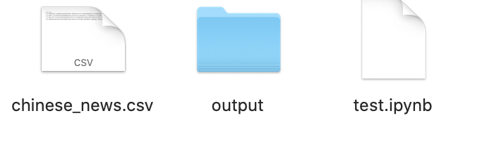
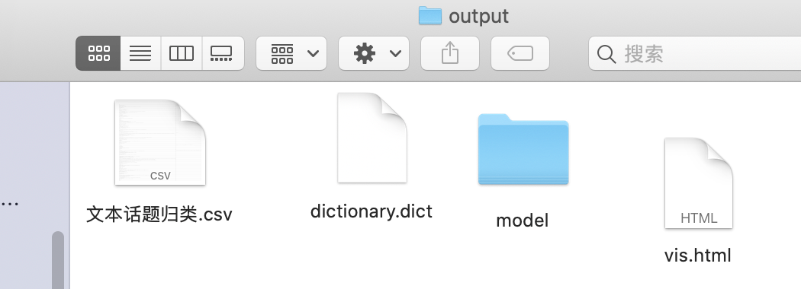
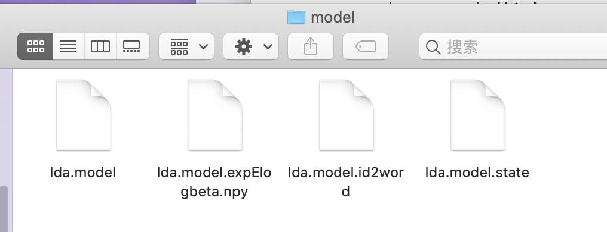
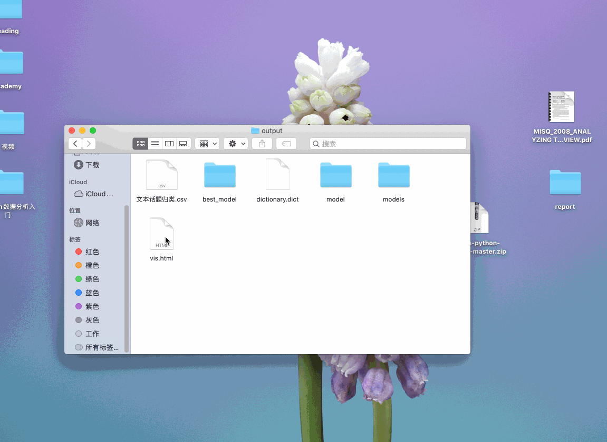

cntopic:快速构建不同领域(手机、汽车等)的情感词典

cntopic
简单好用的lda话题模型，支持中英文。该库基于gensim和pyLDAvis，实现了lda话题模型及可视化功能。
安装
pip install cntopic
使用
这里给大家引入一个场景，假设大家采集新闻数据，忘记采集新闻文本对应的新闻类别，如果人工标注又很费工夫。这时候我们可以用lda话题模型帮我们洞察数据中的规律，发现新闻有n种话题群体。这样lda模型对数据自动打标注topic_1, topic_2, topic_3… ,topic_n。
我们研究者的工作量仅仅限于解读topic_1, topic_2, topic_3… ,topic_n分别是什么话题即可。
lda训练过程，大致分为
- 读取文件
- 准备数据
- 训练lda模型
- 使用lda模型
- 存储与导入lda模型
1. 读取文件
这里我们用一个新闻数据,一共有10类，每类1000条数据，涵盖
‘时尚’, ‘财经’, ‘科技’, ‘教育’, ‘家居’, ‘体育’, ‘时政’, ‘游戏’, ‘房产’, ‘娱乐’
import pandas as pd
df = pd.read_csv('chinese_news.csv')
df.head()
| label | content | |
|---|---|---|
| 0 | 体育 | 鲍勃库西奖归谁属？ NCAA最强控卫是坎巴还是弗神新浪体育讯如今，本赛季的NCAA进入到了末... |
| 1 | 体育 | 麦基砍28+18+5却充满寂寞 纪录之夜他的痛阿联最懂新浪体育讯上天对每个人都是公平的，贾维... |
| 2 | 体育 | 黄蜂vs湖人首发：科比冲击七连胜 火箭两旧将登场新浪体育讯北京时间3月28日，NBA常规赛洛... |
| 3 | 体育 | 双面谢亚龙作秀终成做作 谁来为低劣行政能力埋单是谁任命了谢亚龙？谁放纵了谢亚龙？谁又该为谢亚... |
| 4 | 体育 | 兔年首战山西换帅后有虎胆 张学文用乔丹名言励志今晚客场挑战浙江稠州银行队，是山西汾酒男篮的兔... |
label标签的分布情况
df['label'].value_counts()
家居 1000
时尚 1000
房产 1000
时政 1000
教育 1000
游戏 1000
财经 1000
娱乐 1000
体育 1000
科技 1000
Name: label, dtype: int64
2. 准备数据
一般准备数据包括:
- 分词、数据清洗
- 按照模块需求整理数据的格式
注意在scikit-learn中:
- 英文文本不需要分词，原封不动传入即可。
- 中文文本需要先分词，后整理为英文那样用空格间隔的字符串。形如”我 爱 中国“
import jieba
def text2tokens(raw_text):
#将文本raw_text分词后得到词语列表
tokens = jieba.lcut(raw_text)
#tokens = raw_text.lower().split(' ') #英文用空格分词即可
tokens = [t for t in tokens if len(t)>1] #剔除单字
return tokens
#对content列中所有的文本依次进行分词
documents = [text2tokens(txt)
for txt in df['content']]
#显示前5个document
print(documents[:5])
[['鲍勃', '库西', '奖归', 'NCAA', '最强', '控卫', '坎巴', '还是', '弗神', '新浪', '体育讯', '称赞', '得分', '能力', '毋庸置疑',...],
['球员', '大东', '赛区', '锦标赛', '全国', '锦标赛', '他场', '27.1', '6.1', '篮板', '5.1', '助攻',..],
['依旧', '如此', '给力', '疯狂', '表现', '开始', '这个', '赛季', '疯狂', '表现', '结束', '这个', '赛季', '我们', '全国', '锦标赛', '前进', '并且', '之前', '曾经', '连赢', '赢得', '大东', ...],
['赛区', '锦标赛', '冠军', '这些', '归功于', '坎巴', '沃克', '康涅狄格', '大学', '主教练', '吉姆', '卡洪', ...],
['称赞', '一名', '纯正', '控卫', '而且', '能为', '我们', '得分', '单场', '42', '有过', '单场', '17', '助攻', ...]]
3. 训练lda模型
现在开始正式使用cntopic模块，开启LDA话题模型分析。步骤包括
| Step | 功能 | 代码 |
|---|---|---|
| 0 | 准备documents，已经在前面准备好了 | - |
| 1 | 初始化Topic类 | topic = Topic(cwd=os.getcwd()) |
| 2 | 根据documents数据，构建词典空间 | topic.create_dictionary(documents=documents) |
| 3 | 构建语料(将文本转为文档-词频矩阵) | topic.create_corpus(documents=documents) |
| 4 | 指定n_topics，构建LDA话题模型 | topic.train_lda_model(n_topics) |
这里我们就按照n_topics=10构建lda话题模型，一般情况n_topics可能要实验多次，找到最佳的n_topics

运行过程中会在代码所在的文件夹内生成一个output文件夹，内部含有
- dictionary.dict 词典文件
- lda.model.xxx 多个lda模型文件，其中xxx是代指


上述代码耗时较长，请耐心等待程序运行完毕~
import os
from cntopic import Topic
topic = Topic(cwd=os.getcwd()) #构建词典dictionary
topic.create_dictionary(documents=documents) #根据documents数据，构建词典空间
topic.create_corpus(documents=documents) #构建语料(将文本转为文档-词频矩阵)
topic.train_lda_model(n_topics=10) #指定n_topics，构建LDA话题模型
<gensim.models.ldamulticore.LdaMulticore at 0x158da5090>
4. 使用LDA模型
上面的代码大概运行了5分钟，LDA模型已经训练好了。
现在我们可以利用LDA做一些事情，包括
| Step | 功能 | 代码 | 补充 |
|---|---|---|---|
| 1 | 分词后的某文档 | document = [‘游戏’, ‘体育’] | |
| 2 | 预测document对应的话题 | topic.get_document_topics(document) | |
| 3 | 显示每种话题与对应的特征词之间关系 | topic.show_topics() | |
| 4 | 数据中不同话题分布情况 | topic.topic_distribution(raw_documents) | raw_documents是列表或series，如本教程中的df[‘content’] |
| 5 | 可视化LDA话题模型（功能不稳定） | topic.visualize_lda() | 可视化结果在output中查找vis.html文件，浏览器打开即可 |
4.1 准备document
假设有一个文档 '游戏体育真有意思' 分词处理得到document
document = jieba.lcut('游戏体育真有意思')
document
['游戏', '体育', '真', '有意思']
4.2 预测document对应的话题
我们使用topic模型，看看document对应的话题
topic.get_document_topics(document)
[(0, 0.02501536),
(1, 0.025016038),
(2, 0.28541195),
(3, 0.025018401),
(4, 0.025018891),
(5, 0.025017735),
(6, 0.51443774),
(7, 0.02502284),
(8, 0.025015472),
(9, 0.025025582)]
我们的lda话题模型是按照n_topics=10训练的，限制调用topic预测某个document时，得到的结果是这10种话题及对应概率的元组列表。
从中可以看到概率最大的是 话题6， 概率有0.51443774。
所以我们可以大致认为document是话题6
4.3 显示每种话题与对应的特征词之间关系
但是仅仅告诉每个文档是 话题n，我们仍然不知道 话题n代表的是什么，所以我们需要看看每种 话题n对应的 特征词语。
topic.show_topics()
[(0,
'0.042*"基金" + 0.013*"市场" + 0.011*"投资" + 0.009*"公司" + 0.005*"上涨" + 0.004*"股票" + 0.004*"房地产" + 0.004*"指数" + 0.004*"房价" + 0.004*"2008"'),
(1,
'0.010*"中国" + 0.007*"移民" + 0.006*"项目" + 0.005*"发展" + 0.005*"表示" + 0.005*"经济" + 0.005*"政府" + 0.005*"土地" + 0.004*"政策" + 0.004*"问题"'),
(2,
'0.014*"比赛" + 0.009*"他们" + 0.008*"球队" + 0.007*"篮板" + 0.006*"我们" + 0.005*"球员" + 0.005*"季后赛" + 0.005*"时间" + 0.005*"热火" + 0.005*"赛季"'),
(3,
'0.013*"我们" + 0.013*"一个" + 0.009*"自己" + 0.009*"这个" + 0.007*"没有" + 0.007*"他们" + 0.006*"可以" + 0.006*"就是" + 0.006*"很多" + 0.006*"记者"'),
(4,
'0.020*"电影" + 0.010*"导演" + 0.009*"微博" + 0.008*"影片" + 0.006*"观众" + 0.006*"一个" + 0.005*"自己" + 0.005*"票房" + 0.004*"拍摄" + 0.004*"娱乐"'),
(5,
'0.018*"学生" + 0.015*"留学" + 0.008*"大学" + 0.008*"可以" + 0.006*"功能" + 0.006*"像素" + 0.006*"拍摄" + 0.006*"采用" + 0.005*"学校" + 0.005*"申请"'),
(6,
'0.007*"玩家" + 0.006*"封神" + 0.006*"手机" + 0.006*"online" + 0.006*"the" + 0.006*"游戏" + 0.005*"陈水扁" + 0.005*"活动" + 0.005*"to" + 0.005*"一个"'),
(7,
'0.009*"信息" + 0.009*"考试" + 0.009*"游戏" + 0.007*"工作" + 0.007*"手机" + 0.006*"四六级" + 0.006*"考生" + 0.005*"发展" + 0.004*"可以" + 0.004*"霸王"'),
(8,
'0.015*"我们" + 0.011*"企业" + 0.011*"产品" + 0.010*"市场" + 0.009*"家具" + 0.009*"品牌" + 0.008*"消费者" + 0.007*"行业" + 0.007*"中国" + 0.007*"一个"'),
(9,
'0.012*"游戏" + 0.011*"玩家" + 0.010*"可以" + 0.008*"搭配" + 0.008*"活动" + 0.006*"时尚" + 0.005*"OL" + 0.004*"获得" + 0.004*"任务" + 0.004*"手机"')]
根据上面的 话题n 与 特征词 大致可以解读每个 话题n 是什么内容的话题。
4.4 话题分布情况
现在我们想知道数据集中不同 话题n 的分布情况
topic.topic_distribution(raw_documents=df['content'])
9 1670
1 1443
0 1318
5 1265
4 1015
2 970
8 911
3 865
7 307
6 236
Name: topic, dtype: int64
我们的数据有10类，每类是1000条。而现在LDA话题模型单纯的根据文本的一些线索，按照n_topics=10给我们分出的效果还不错。
最完美的情况是每个 话题n 都是接近1000, 现在 话题9太多， 话题6、 话题7太少。
不过我们也要注意到某些话题可能存在交集，容易分错，比如
- 财经、房产、时政
- 体育娱乐
- 财经、科技
等
综上，目前模型还算可以，表现还能接受。
4.5 可视化（功能不稳定）
现在只有10个话题， 我们用肉眼看还能接受，但是当话题数太多的时，还是借助可视化工具帮助我们科学评判训练结果。
这就用到topic.visualize_lda()，
topic.visualize_lda()
运行结束后在
代码所在的文件夹output文件夹中找vis.html文件，右键浏览器打开。
可视化功能不稳定，存在vis.html打不开的情况；希望海涵

图中有左右两大区域
- 左侧 话题分布情况，圆形越大话题越多，圆形四散在四个象限
- 右侧 某话题对应的特征词，从上到下权重越来越低
需要注意的是左侧
- 尽量圆形均匀分布在四个象限比较好，如果圆形全部集中到有限的区域，模型训练不好
- 圆形与圆形交集较少比较好，如果交集太多，说明n_topics设置的太大，应该设置的再小一些
五、存储与导入lda模型
lda话题模型训练特别慢，如果不保存训练好的模型，实际上是在浪费我们的生命和电脑计算力。
好消息是cntopic默认为大家存储模型，存储地址是output文件夹内，大家只需要知道如何导入模型即可。
这里需要导入的有两个模型，使用步骤
| 步骤 | 模型 | 代码 | 作用 |
|---|---|---|---|
| 0 | - | - | 准备documents |
| 1 | - | topic = Topic(cwd=os.getcwd()) | 初始化 |
| 2 | 词典 | topic.load_dictionary(dictpath='output/dictionary.dict’) | 直接导入词典，省略topic.create_dictionary() |
| 3 | - | topic.create_corpus(documents=documents) | 构建语料(将文本转为文档-词频矩阵) |
| 4 | lda话题模型 | topic.load_lda_model(modelpath='output/model/lda.model’) | 导入lda话题模型， 相当于省略topic.train_lda_model(n_topics) |
现在我们试一试, 为了与之前的区分，这里我们起名topic2
topic2 = Topic(cwd=os.getcwd())
topic2.load_dictionary(dictpath='output/dictionary.dict')
topic2.create_corpus(documents=documents)
topic2.load_lda_model(modelpath='output/model/lda.model')
大家可以自己回去试一试第4部分使用LDA模型的相关功能
如果
如果您是经管人文社科专业背景，编程小白，面临海量文本数据采集和处理分析艰巨任务，个人建议学习 《python网络爬虫与文本数据分析》视频课。
- python入门
- 网络爬虫
- 数据读取
- 文本分析入门
- 机器学习与文本分析
- 文本分析在经管研究中的应用
感兴趣的童鞋不妨 戳一下 《python网络爬虫与文本数据分析》进来看看~
更多
支持
分享不易，谢谢大家分享（或红包）支持^_^